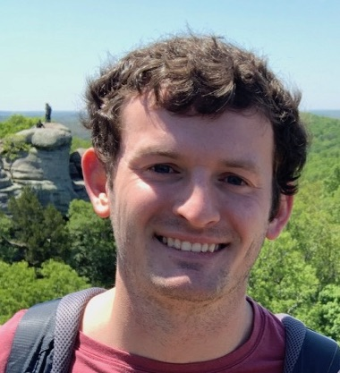

Brevin Tilmon
PhD Student
University of Florida
Research
I'm a Phd student in Electrical and Computer Engineering at the University of Florida, where I am advised by Sanjeev Koppal. I am also a part of the Florida Optics and Computational Sensor (FOCUS) Lab. My research focuses on computational photography, computer vision, and robotics. Specifically, I design and build computational cameras for novel real-time adaptive imaging capabilities with applications in augmented reality, autonomous robotics, and mobile computer vision.
Publications
-
FoveaCam: A MEMS Mirror-Enabled Foveating Camera
Brevin Tilmon, Eakta Jain, Silvia Ferrari, Sanjeev Koppal
International Conference on Computational Photography 2020
-
A MEMS-Based Foveating LIDAR to Enable Real-Time Adaptive Depth Sensing
Francesco Pittaluga, Zaid Tasneem, Justin Folden, Brevin Tilmon, Ayan Chakrabarti, Sanjeev Koppal
arXiv 2020
-
Design and Calibration of a Fast Flying-Dot Projector for Dynamic Light Transport Acquisition
Kristofer Henderson, Xiaomeng Liu, Justin Folden, Brevin Tilmon, Suren Jayasuriya, Sanjeev Koppal
Transactions on Computational Imaging 2020
-
Novel Approach of Wavelet Analysis for Nonlinear Ultrasonic Measurements and Fatigue Assessment of Jet Engine Components
Gheorge Bunget, Brevin Tilmon, Andrew Yee, Dylan Stewart, James Rogers, et al.
American Institute of Physics 2018
Projects
- IEEE Robotics Competitions
As president of our IEEE robotics branch at Murray State University, I led the design and implementation of fully autonomous robots leveraging 360 degree lidar, cameras, and computer vision that competed in the 2016-2019 IEEE SoutheastCon Hardware Competitions. Our team was funded through NASA grants and, including our performance at the competitions, I coordinated outreach activities that contributed to these grants. Our team typically placed in the top 20% of schools.
Video (2019) / Code (2019) / News